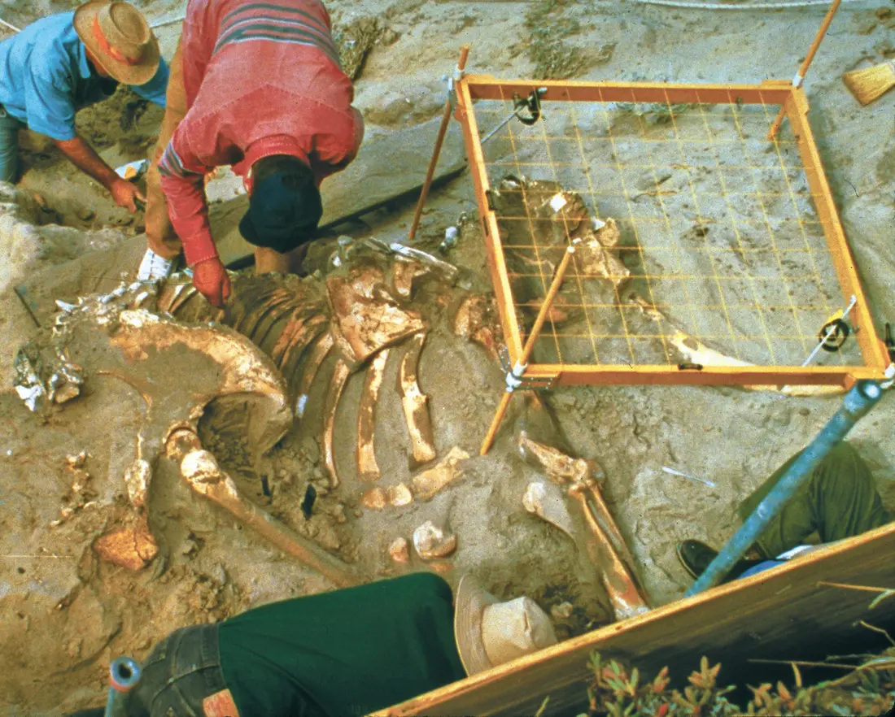
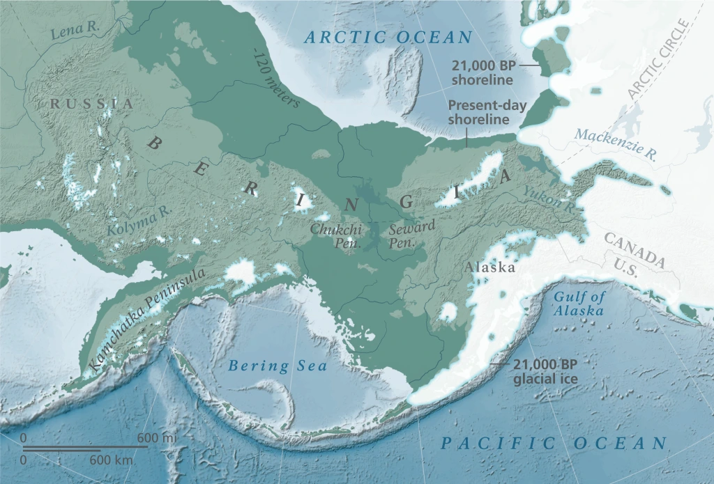
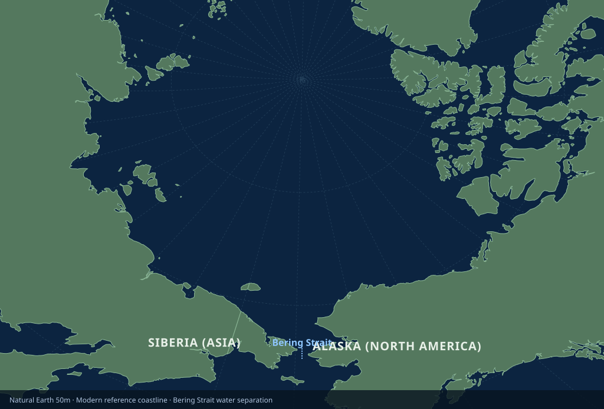
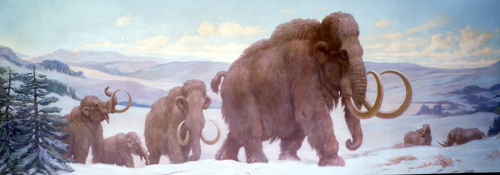
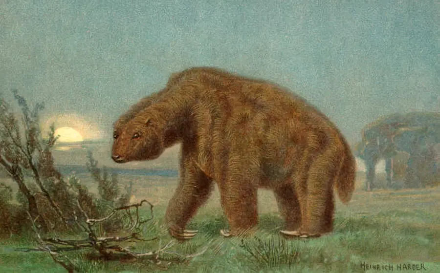
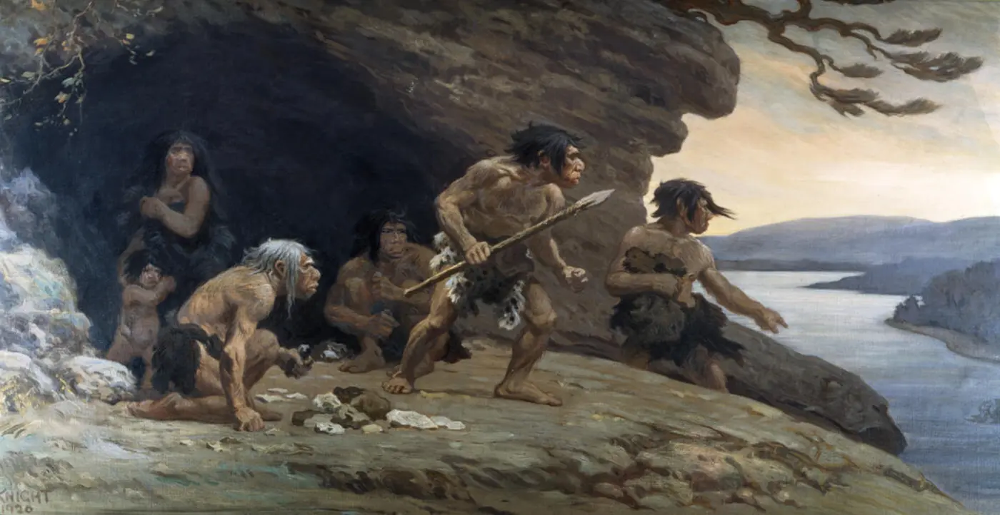

The Pleistocene was not one endless winter. Ice sheets advanced and retreated, seas fell and rose, habitats shifted, and humans lived beside enormous mammals. Read the traces they left behind.
Defend & reflect13 min · Build a case, check it, and revise your explanation.
Core route: about 45 minutes. Use the optional life and extinction extension for a 60-minute class. Discuss with a partner, then write in the field notes below or on paper. Use the site’s Save answers control to keep responses in this browser, or Print lesson for a paper copy.
Teacher guide & success criteria
Work in pairs: one student operates the controls while the other records evidence; switch at the orbital lab. Grade the explanation, not the number of clicks. A successful response names the place and time, links each observation to an inference, and identifies a plausible alternative explanation. For younger learners, use the sentence starters; for older learners, ask what additional sampling or dating would test their uncertainty.
Before you investigate
Three ideas to carry into the field
01
“Ice Age” is shorthand
The Pleistocene included repeated colder glacial intervals and warmer interglacial intervals. Ice did not cover the whole planet.
02
Climate leaves proxies
A proxy is an indirect clue. Ice bubbles, pollen, ocean sediment, landforms, fossils, and chemical ratios preserve different pieces of the past.
03
One clue is not a case
Scientists compare independent records, dates, and locations. Agreement between several kinds of evidence makes an explanation stronger.
Public-domain field plates
The Pleistocene is still visible
These are real sites and specimens—not reconstructions. Notice how scale bars, excavation grids, surrounding sediment, and location records turn an object into scientific evidence.

01 · CONTEXTPygmy mammoth excavationResearchers expose a Pleistocene pygmy mammoth at Channel Islands National Park. The grid records exactly where each bone lies. NPS image · public domain ↗
03 · TRACEHuman footprints, White SandsA footprint is a trace fossil: evidence of behavior preserved in place. The scale bar makes size measurable. NPS Photo · public domain ↗
Interactive investigation 1
Scrub the Pleistocene time core
Compare two selected horizons. These stops are not equally spaced in time and do not describe identical conditions everywhere.
YOUNGER
OLDER
Use the arrow keys or drag. Seven selected stops—not to scale. The drawn core is a navigation diagram, not a sampled sediment core. Ma = million years ago; ka = thousand years ago.
2.58 Ma1.8 Ma800 ka300 ka125 ka21 ka11.7 ka
BoundaryLong-term cooling
The Pleistocene begins
The formal boundary sits at 2.58 million years ago. Large Northern Hemisphere ice sheets had begun expanding as Earth entered a new pattern of glaciation.
Northern Ice Sheet Volume35% of LGM peak
Global Sea Level (vs. today)~ −35 m
Evidence in viewMarine sediment · oxygen isotopes
Interactive investigation 2
Mix the orbital rhythms
Earth’s orbit changes in several overlapping rhythms. Together they alter where and when sunlight arrives, helping pace glacial cycles.
Test: Reset, uncheck eccentricity and precession, and observe obliquity alone. Add precession while keeping the reading position the same. Compare the bends and peaks. The vertical scale stays fixed.
Illustrative orbital rhythms · arbitrary units0 → 400 thousand years of model time
Colored curves show each selected rhythm; the solid white curve is their sum. A dashed line is the saved comparison. Above and below zero are relative signal values, not temperature or measured sunlight. The cursor reads a fixed trace.
No saved comparison.
All three orbital rhythms are shown.
Model boundary: These sine waves use chosen amplitudes and starting phases to teach overlapping signals; they are not dated orbital calculations, measured insolation, a temperature reconstruction, or a forecast. Eccentricity affects the strength of precession’s seasonal effect in the real system; this simple sum does not model that interaction. Ice sheets also respond through reflectivity, greenhouse gases, oceans, and land. Orbital cycles do not explain today’s rapid warming. NASA: mechanism and limits ↗
1Cooler high-latitude summers
→
2Less winter snow melts
→
3Ice survives and accumulates
→
4Brighter ice reflects more sunlight
Interactive investigation 3 · land & sea
Where did the ocean go?
More water stored in land ice leaves less in the ocean. Around the Last Glacial Maximum, global sea level was roughly 120 meters lower. A broad shelf between Siberia and Alaska became exposed.

Then · about 21,000 years before present. Dark green shelf connects the continents; the map distinguishes the reconstructed shoreline, present shoreline, and glacial ice. Much of Beringia remained unglaciated. This is a generalized reconstruction, not a surveyed ancient coast.National Park Service · public domain. Source and interpretation ↗

Now · modern reference coastline. Water separates Siberia and Alaska at the Bering Strait. This view shows land and water, with no glacier overlay. The two maps use different projections; compare the connection, not pixel areas.ClassroomOS EarthEngine · Natural Earth v5.1.2, public domain, 1:50 million. Generalized coastlines; not live or survey data. Dataset rights ↗
Enlarge either map to read its labels; use the arrow buttons to switch maps. BP means “before present,” conventionally before 1950. The reconstructed ice and coastlines are specific to the stated age, not the whole Pleistocene.
Optional extension · Life in a variable world
Move, adapt, or disappear
The mammoth steppe was one Pleistocene ecosystem, not the whole world. Forests, grasslands, wetlands, deserts, tundra, and ice margins shifted as climate changed.

Historical reconstruction. Woolly mammoths had cold-adapted bodies. This historical painting proposes a scene; bones, teeth, preserved tissue, and environmental records test its details.Charles R. Knight, c. 1929 · public domain ↗
GRASSLAND GRAZER
Woolly mammoth
Cold-adapted hair, fat, small ears, and specialized teeth suited open northern environments. Mammoths were one branch of the elephant family—not ancestors of living elephants.

Historical reconstruction. Giant ground sloths were diverse American herbivores. This historical reconstruction is an interpretation, not a photograph or proof of this animal’s exact habitat.Heinrich Harder, c. 1920 · public domain ↗
AMERICAS
Giant ground sloths
Several lineages ranged from modest to enormous. Their fossils, dung, and cave remains reveal diets and habitats that changed across regions.

Historical reconstruction. Neanderthals made tools and lived in changing environments. This 1920 reconstruction includes imagined social details; archaeology tests claims about tools, fire, and behavior.Charles R. Knight, 1920 · public domain ↗
ADAPTABLE HOMININS
Many human species
The epoch includes Homo erectus, Neanderthals, Denisovans, Homo sapiens, and others. Different populations made tools, used fire, moved, cooperated, and adjusted to changing habitats.
Case site · Beringia
A land bridge made by missing ocean
When glaciers stored more of Earth’s water on land, global sea level fell and exposed land between Siberia and Alaska. Beringia was often a broad, dry region—not a narrow bridge surrounded by ice—and animals moved in both directions at different times.
OPEN INVESTIGATION
Why did so many large mammals disappear?
Near the end of the Pleistocene, many megafaunal species became extinct. Timing and causes differed among continents and species.
Climate and habitat change: warming, shifting rainfall, and changing vegetation altered food and range.
Human pressure: hunting and ecological effects may have added stress in some places.
Interaction: multiple pressures can reinforce each other; evidence does not support one simple worldwide story.
Interactive investigation 4
Build an evidence case
Test the claim: “This valley was cooler and wetter during part of the late Pleistocene than it is today.”
TEACHING CASE · VALLEY LAYER
Choose, explain, revise
A strong case needs evidence connected to the place, time, and environment in the claim.
Select evidence to begin.
Field check
Can you read the epoch?
Exit ticket
Write the landscape’s story
OBSERVE
Name two kinds of Pleistocene evidence and state what each can reveal.
EXPLAIN
Why is “the Ice Age” a useful phrase but an incomplete scientific description?
ARGUE
Use at least two clues to defend a claim about a past environment. Include one limit or uncertainty.
Want to investigate further? Compare processes in the Rock Cycle, test feedbacks in the Climate Simulator, or explore radiometric dating. Ask what each model can and cannot establish.
Photographs are locally hosted, public-domain National Park Service images with visible captions; the species profiles use public-domain historical paleoart, credited beneath each painting; full provenance for every image is recorded in the image directory’s attribution file. The Beringia reconstruction retains the NPS map’s original geography and labels; the modern reference uses the shared Earth engine and Natural Earth coastlines. Lesson diagrams and the orbital signal mixer are original explanatory graphics. Dates follow the ICS chart (source review: October 12, 2026); the trace is deliberately schematic and uses model time rather than calendar dates.